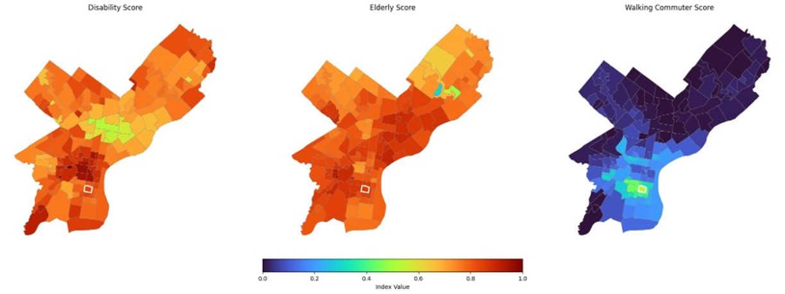

Social Score¶
The Social Score measures neighborhood-level social conditions that influence accessibility needs in Philadelphia.
It is built from American Community Survey (ACS) demographic variables and captures population characteristics related to mobility vulnerability.
The score is calculated at the census tract level and then aggregated to neighborhood boundaries for citywide comparisons.
Overview¶
The Social Score reflects three core demographic components:
- Disability Score (inverted disability rate)
- Elderly Score (inverted age 65+ rate)
- Walker–Commuter Score (walking to work rate)
Each variable is transformed into a 0–1 scale and averaged:
High values indicate tracts with lower demographic vulnerability and greater likelihood of population-based mobility independence.
Data Sources¶
All indicators originate from the 2021 ACS 5-year tables:
Disability¶
B18101,B18101A–I: Disability by race categoriesC18108: Types of disability
Age 65+¶
B01001: Male and female age distributions (all 65+ bins)
Commuting¶
B08301: Modes of transportation to work
Vehicles per Household¶
B08201
(Additional variables are derived internally as rates or totals.)
Full code for renaming and cleaning variables is in the project notebook.
Methodology¶
1. Preparing ACS Variables¶
All ACS raw counts are converted to numeric and cleaned.
Key totals include:
- total_population
- population_with_disability
- total_age_65_plus (sum of all 65+ age bins)
- commute_walk, total_workers
- households_no_vehicle, total_households
2. Component Calculations¶
a. Disability Rate¶
Because higher disability prevalence indicates higher vulnerability, we invert the measure:
b. Elderly Rate (65+)¶
Also inverted:
This inversion does not imply older residents are undesirable; rather, older residents often require more accessible infrastructure, so high elderly populations indicate greater need, hence lower Social Scores.
c. Walking-to-Work Rate¶
Higher rates imply stronger pedestrian infrastructure and local-access travel behaviors.
3. Normalization¶
The three features are normalized with MinMax scaling:
mobility_features = [
"disability_rate_inv",
"age_65_plus_rate_inv",
"commute_walk_rate"
]
df[mobility_features] = scaler.fit_transform(df[mobility_features])
4. Final Social Score Calculation¶
The final Social Score is the average of the three normalized components:
[
\text{Social Score} = \frac{
\text{disability_rate_inv} +
\text{age_65_plus_rate_inv} +
\text{commute_walk_rate}
}{3}
]
Higher Social Scores indicate neighborhoods with lower social vulnerability and greater demographic mobility independence.
--
5. Aggregation to Neighborhoods¶
The tract-level Social Scores are spatially joined to Philadelphia neighborhood boundaries from the philly_neighborhoods.geojson file. Neighborhood-level scores are computed as the mean of constituent tracts:
agg_vars = [
"disability_rate",
"age_65_plus_rate",
"commute_walk_rate",
"households_no_vehicle_rate", # not included in final score
"mobility_index" # should be called social/demographic score
]
neigh_summary = tracts_to_hoods.groupby("NAME_right")[agg_vars].mean().reset_index()
neigh_summary = neigh_summary.rename(columns={"NAME_right": "Neighborhood"})
Passyunk Square's aggregated Social Score can then be compared to other neighborhoods in Philadelphia for accessibility analysis.
Interpretation¶
High Social Scores reflect neighborhoods with demographics that typically experience fewer mobility barriers, such as lower disability prevalence, fewer elderly residents, and higher rates of walking to work. Conversely, low Social Scores highlight areas where residents may face greater challenges related to mobility independence, indicating potential needs for improved infrastructure and services.
Citywide Patterns¶
These maps show the spatial distribution of the three components used to build the Social Score across Philadelphia neighborhoods.
Passyunk Square is highlighted for reference.

Elderly Score (Inverse 65+ Rate): Higher scores (red areas) indicate lower proportions of elderly residents, suggesting potentially lower mobility vulnerability related to age. *** Disability Score (Inverse Disability Rate): Higher scores (red areas) indicate lower disability prevalence, suggesting potentially lower mobility vulnerability related to disability. *** Walker-Commuter Score: Higher scores (red areas) indicate higher rates of walking to work, suggesting stronger pedestrian infrastructure and local-access travel behaviors.